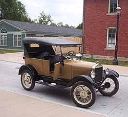
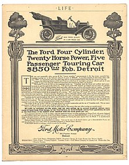
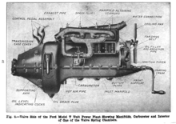
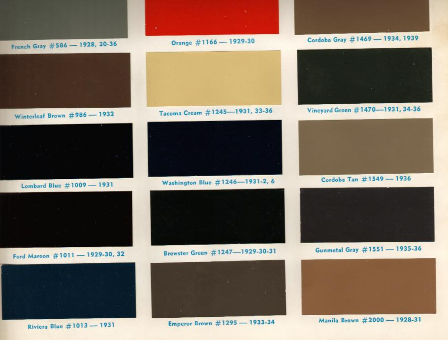

Model-T
A Ford T-modell elnevezésű autót 1908 szeptemberétől 1927 októberéig gyártotta Henry Ford cége, a Ford Motor Company. Beceneve Tin Lizzy volt. Ez a modell tette lehetővé a középosztálybeli amerikaiak számára az utazást, és ez számít az első megfizethető autónak is, ami többek között a Frederick Winslow Taylor által feltalált futószalagnak volt köszönhető. Az autó páratlan sikerének alapja a konstrukció egyszerűsége és célszerűsége volt, amelyet az akkori viszonyok között újdonságnak számító anyagok és technológiai alkalmazások is segítettek. Népszerűségének okán több mint tizenötmillió darabot gyártottak belőle. 1914-ben a Ford több autót gyártott, mint az összes többi járműgyártó együttvéve. A gyártókapacitás csúcsát 1925 jelentette, amikor napi 9–10 ezer autó gördült le a gyártósorról, és ez éves szinten már a kétmilliót is meghaladta. A gyártott darabszám tekintetében más autótípus egészen 1972-ig nem tudta ezt felülmúlni, akkor elsőként a Volkswagen Bogár volt képes megelőzni.
Története
Amikor Henry Ford megalapította vállalatát, a Ford Motor Companyt, a világ útjain még körülbelül csak 200 000 gépkocsi közlekedett. Ekkor az autó ritka luxuscikknek számított, s ezeket egyéni kívánságra, egyedi alkatrészekből szerelték össze, így a javításuk nehézkes és nagyon költséges volt. 1908-tól, gyökeres változást hozva, a T-modell tette népszerűvé az autózást Amerikában. Az első sorozatgyártású Bádog Böskét 1908. augusztus 12-én gyártották le, és szeptember 27-én hagyta el a detroiti Piquette gyárat. 1927. május 26-án Henry Ford már azt nézhette, ahogy a Highland Park-beli szerelőszalagot elhagyta a tizenötmilliós darabszámot elérő T-modell.
Motor

A T-modell orrában egy 2,9 literes, soros, négyhengeres motor helyezkedett el. Mind a négy henger egy közös öntvényben, a motorblokkban volt, mint manapság, nem pedig hengerenként egy-egy öntvényben, mint ahogy az akkoriban megszokott volt. Teljesítménye 20 LE (15 kW) volt, a végsebessége 64-72 km/h. A világújdonságnak számító, oldalszelepelt motort levehető hengerfejjel szerelték, így a motor javítása és karbantartása lényegesen könnyebb lett. A hivatalos források szerint a T-modell fogyasztása 11-18 liter/100 km körül alakult. A motor nemcsak benzinnel, hanem petróleummal és etil-alkohollal is képes volt működni, azonban az alkohol használata gazdaságtalan volt a benzin csökkenő ára miatt, majd a szesztilalom idejében lehetetlenné is vált a használata. A motor gyújtógyertyás mágnesgyújtással működött, vagyis a lendkerékre szerelt gyújtómágnes indukálta azt a nagyfeszültséget, ami a gyertyán a szikrát biztosította. A gyújtásidőpontot a kormányoszlopra szerelt kar segítségével lehetett beállítani. A kézi indítás nem mindig nyújtott elegendő feszültséget az autó beindításához, akkumulátort is lehetett használni, amely azonban egészen 1926-ig nem volt az alapfelszereltség része, annak ellenére, hogy az akkumulátor helyére utaló „bat” címke már az összes T-modellen megtalálható volt. 1915-ben, amikor az acetilénlámpák helyett az elektromos fényszórókat bevezették, az elektromos rendszert továbbfejlesztették annak érdekében, hogy biztosítsa a fényszórók, helyzetjelzők és a hangjelző kürt működtetését is. A legtöbb 1919 után eladott járműben már benne volt az elektromos önindító, amit a padlón lévő gombbal, bal lábbal lehetett működésbe hozni.
Színek
1918-ra az amerikai autók fele T-modell volt. Ford azt írta az önéletrajzában, hogy 1909-ben a következőket mondta a saját vezetőségének: „Akármelyik vevő akármilyen színű autót vehet addig, amíg a választott színe a fekete”. Azonban a gyártás első éveiben, 1908-tól 1914-ig, a T-modell nem volt kapható feketében, csak szürkében, zöldben, kékben és vörösben. A zöldet a túraautók, a városi autók, a kupék és a Landauletek kaphatták. A szürkét csak a városi autók, a pirosat csak a túraautók. 1912-re minden járművet sötétkékre festettek, fekete sárhányóval. Csak 1914-ben vezették be az „akármilyen szín, amíg az fekete” irányelvet. Ford azért javasolta 1914-től 1926-ig a fekete szín használatát, mert ez a szín volt a legolcsóbb és a legellenállóbb. A jármű gyártása során a Ford több mint harmincféle feketét használt az autó különböző részein. Erre azért volt szükség, mert így a különböző részeken eltérő lehetett például a száradási idő. Az 1920-as években változást jelentett, hogy kék, sárga és szürke T-modellek kerültek forgalomba, de ez már nem elégítette ki a vevőket, hiszen ennél már lényegesen többre vágytak. Az új formák és a nagyobb sebesség iránt megmutatkozó kereslet az évtized végére ezt az autótípust kiszorította a piacról.